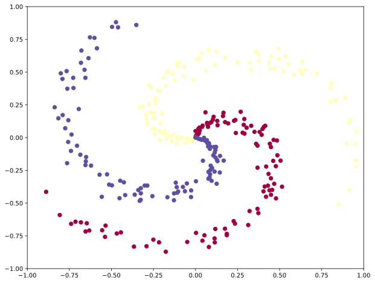
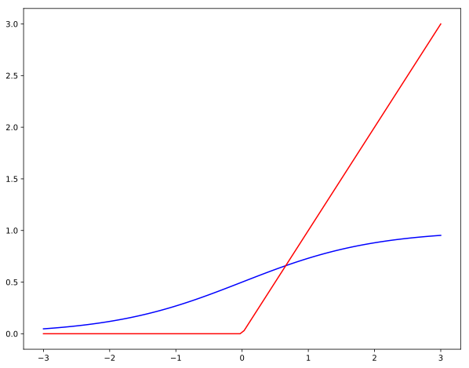
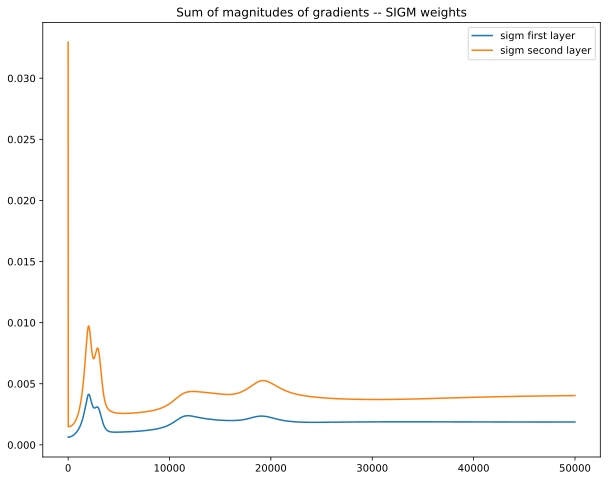
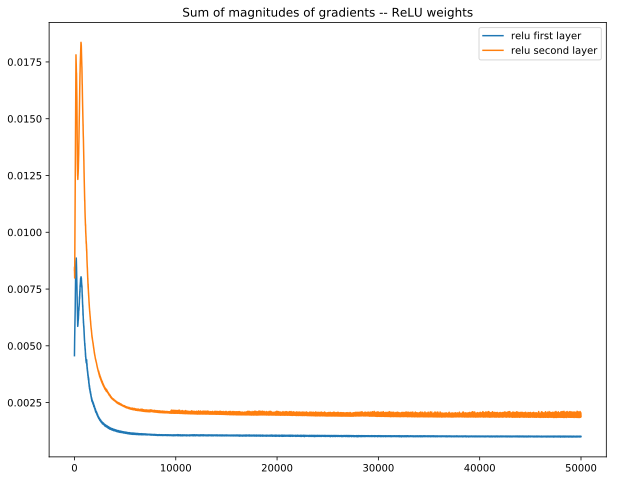
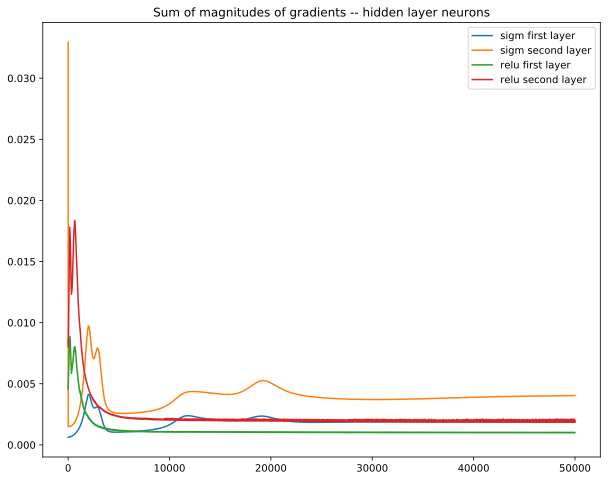
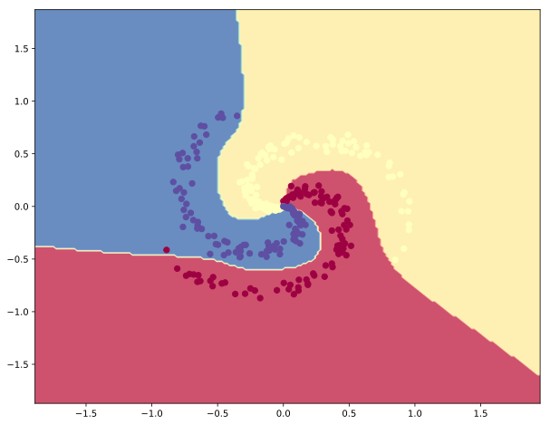
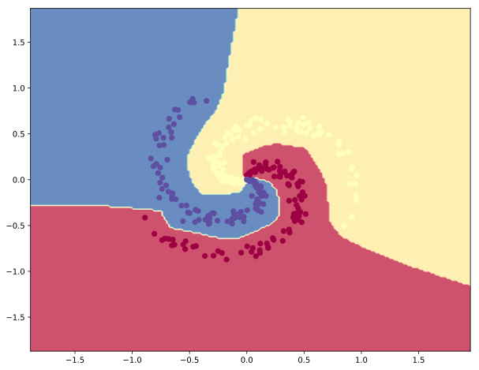

Vanishing Gradients
这里只使用numpy来实现一个neural network，而非借助pytorch这样的框架，如此，可以更好的帮助我理解neural network以及vanishing gradients.
1 | import numpy as np |
1 | # generate random data -- not linearly separable |

sigmoid 函数的值在0,1之间，尤其是在输入值的绝对值很大的情况下，两端会无限接近0或1，因此变得很扁平，由此，对应的梯度（Gradient）就会无限逼近0。这就导致了所谓的梯度消失（vanishing gradients）的现象。因为梯度消失使得神经网络无法进行有效的学习（因为每次迭代对参数W的修正几乎都是0）。
而另一方面，relu函数不会出现因为输入参数变大而输出变得不敏感。
1 | def sigmoid(x): |
1 | # plot the 2 function |

接下来让我们看一下2种不同的非线性函数（sigmoid和relu）对神经网络在训练时的影响。以下，我们会创建一个简单的3层神经网路（2 hidden layers）。 通过使用sigmoid和relu我们可以比较在训练过程中的区别。
1 | # function to train a 3 layer neural net with either relu or sigmoid nonlinearity via vanilla grad decent. |
关于back propagation 的计算参见下图。 其实就是对chain rule的应用。

Train net with sigmoid nonlinearity first
1 | # Initialize toy model, train sigmoid net |
training accuracy: 0.97
Now train net with ReLU nonlinearity
1 | # Re-initialize model, train relu net |
training accuracy: 0.9933333333333333
The Vanishing Gradient Issue — 梯度消失的问题
我们可以对某一hidden层W的梯度（dW）进行加总，用这个简单的指标来衡量学习的速度，显然，sum(dW)越大，说明神经网络的学习速度越快。
1 | plt.plot(np.array(sigm_array_1)) |

由上图可见，第二层的梯度显著大于第一层。说明在进行back prop的时候，hidden层越多，那么排在最前的hidden层对应的梯度（dW）就会变得越来越小。直观的讲，因为chain rule的原因，hidden层越多，则chain rule里乘的local gradient越多，而另一方面，由于nonlinearity使用的是sigmod，sigmoid grad = δ*(1-δ)，输出必在[0,1]之间。所以local gradient的值都落在[0，1]，那么随着hidden层的增加，排在最前的hidden层对应的梯度（dW）就会变得越来越小。
1 | plt.plot(np.array(relu_array_1)) |

由上图可见，ReLU收敛的速度比sigmoid快很多，而且收敛后就很稳定。
1 | # overlaying the 2 plots to compare |

上图可以更明显的看到，ReLU的收敛速度快，一开始的gradient更高。
最后，看看2种分类器的表现，由于ReLU训练速度更快，因此用同样的epochs，ReLU表现的更好。
1 | # plot the classifiers -- SIGMOID |

1 | # plot the classifiers-- RELU |
